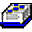

| Notes on References |
 |
|
Main Description
References can be contributed under the main RUP references pages by plug-ins. In the future, references will be treated similarly to term definitions - plug-ins will be able to add their own references, and the references page will be generated, just like the glossary is today. |
© Copyright IBM Corp. 1987, 2006. All Rights Reserved. |